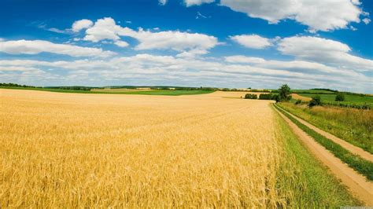

What is Agriculture in Pakistan?
Agriculture in Pakistan is the backbone of the country's economy. It heavily relies on major crops, with arable land and water being Pakistan's principal natural resources. Approximately 18.9% of Pakistan's GDP is attributed to agriculture, and it employs about 42.3% of the labor force. The most agriculturally active province is Punjab, where wheat and cotton are the predominant crops. Additionally, Pakistan ranks as the world's fourth-largest producer of mangoes, with mango orchards primarily found in Sindh and Punjab provinces. The historical roots of agriculture in the region date back to the Indus Valley civilization, where irrigation systems were developed around 4500 BCE, leading to planned settlements and increased prosperity. Today, agriculture remains a vital sector for Pakistan's economy, providing livelihoods and contributing to foreign exchange. üåæüáµüá∞
Different components of Agriculture:
1.Crops:
Crop cultivation is a fundamental component of agriculture. Farmers grow various crops,
including cereals (such as wheat, rice, and maize), pulses (like lentils and chickpeas), oilseeds
(such as soybeans and sunflower), and cash crops (like cotton and sugarcane). These crops provide food,
raw materials, and income.
2. Livestock:
Livestock farming involves raising animals for meat, milk, wool, and other products.
Common livestock include cattle, goats, sheep, poultry, and buffalo. Livestock contribute to food security,
employment, and rural economies.
3. Horticulture:
Horticulture focuses on fruits, vegetables, and ornamental plants. Fruit orchards
(such as apple and citrus), vegetable gardens, and flower nurseries fall under this category. Horticulture
enhances nutrition and beautifies landscapes.
4. Fisheries and Aquaculture:
Fishing and aquaculture contribute to protein supply. Fish farming in
ponds, lakes, and coastal areas provides seafood like fish and shrimp.
5. Agroforestry:
Agroforestry integrates trees with crops or livestock. It helps prevent soil erosion,
provides timber, and supports biodiversity.
6. Agricultural Machinery and Technology: Modern agriculture relies on machinery like tractors,
harvesters, and irrigation systems. Technology, such as precision farming and biotechnology, enhances
productivity.
7. Agribusiness and Marketing: Agribusiness encompasses activities related to processing, packaging,
and distributing agricultural products. Efficient marketing channels connect farmers to consumers.
8. Soil and Water Management: Proper soil conservation, irrigation, and drainage are essential for
sustainable agriculture. Soil health and water availability directly impact crop yields.
9. Agricultural Research and Extension: Research institutions and extension services provide knowledge,
training, and innovations to farmers. They improve practices and address challenges.
10. Agricultural Policies and Regulations: Government policies influence agricultural practices,
subsidies, and trade. Regulations ensure food safety and environmental protection. üå±üêÑüåæ